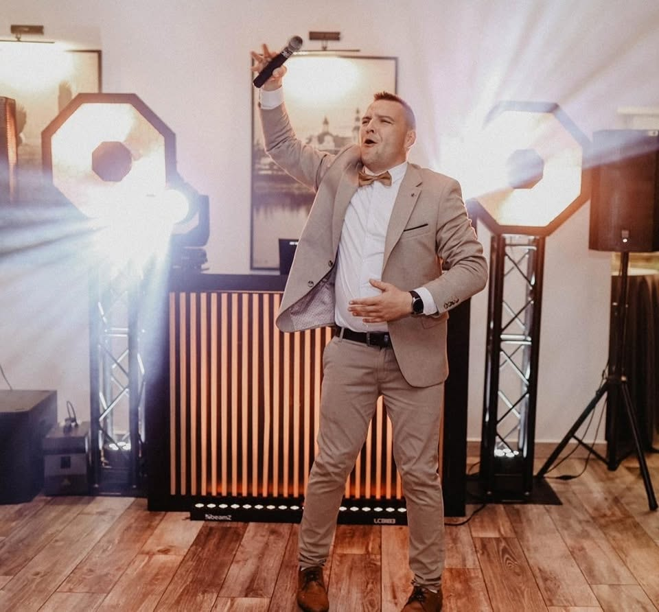
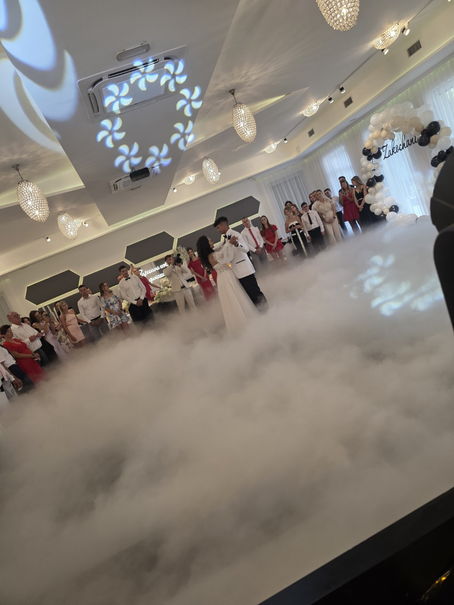
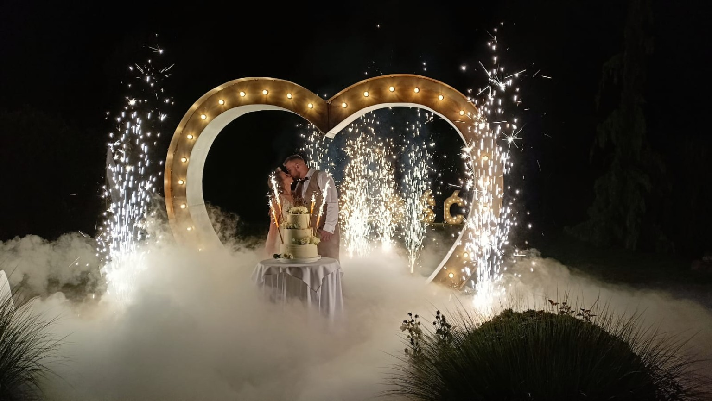
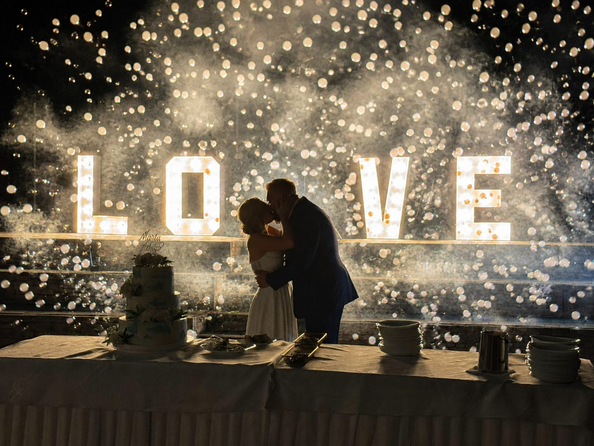
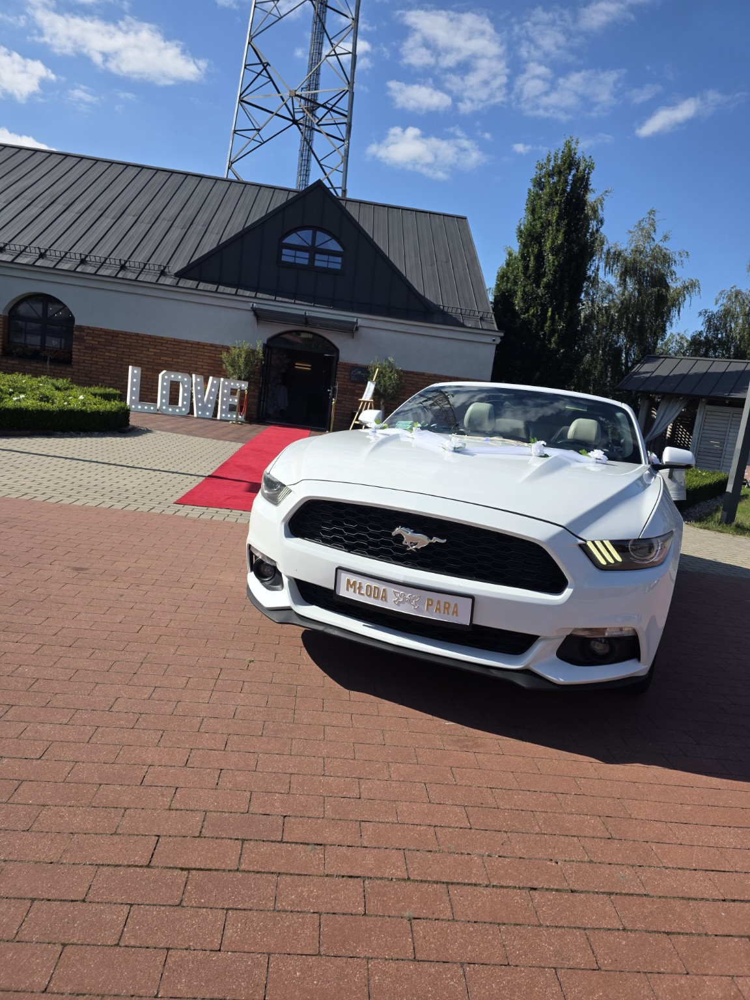

Muzyka dopasowana do gości
Repertuar ustalamy wspólnie, a podczas wesela dobieram utwory do sytuacji na parkiecie. Łączę różne pokolenia i style muzyczne.
Szukacie DJ-a i wodzireja na wesele w Jarocinie? Jako DJ HuNi dbam o muzykę, prowadzenie, atmosferę i najważniejsze momenty Waszego wesela – od pierwszego tańca aż do ostatniego utworu na parkiecie.

Nazywam się Mateusz Hunold i jako DJ HuNi zajmuję się kompleksową oprawą muzyczną oraz prowadzeniem wesel. Jestem związany z okolicami Jarocina, ale obsługuję wydarzenia również w innych częściach Wielkopolski i na terenie całej Polski.
Każde wesele prowadzę indywidualnie. Nie korzystam ze sztywnego schematu, który ma wyglądać identycznie na każdej imprezie. Obserwuję parkiet, reaguję na gości i dopasowuję repertuar oraz tempo wydarzenia do tego, co dzieje się na sali.
Jako DJ, wodzirej i konferansjer dbam również o komunikaty, zapowiedzi, najważniejsze punkty wesela oraz dobrą współpracę z obsługą sali, fotografem i filmowcem.
Dobry DJ na wesele powinien nie tylko odtwarzać utwory. Ważne jest prowadzenie całego wydarzenia, kontakt z gośćmi i stworzenie atmosfery, w której ludzie naprawdę chcą się bawić.
Repertuar ustalamy wspólnie, a podczas wesela dobieram utwory do sytuacji na parkiecie. Łączę różne pokolenia i style muzyczne.
Zapowiadam ważne momenty, prowadzę zabawy i dbam o płynny przebieg wesela, bez niepotrzebnego chaosu i długich przestojów.
Stawiam na nowoczesne i angażujące pomysły, które mają dawać gościom frajdę, a nie wprawiać ich w niezręczne sytuacje.
Oprawę wesela możemy rozszerzyć o dodatkowe efekty, które świetnie wyglądają zarówno na żywo, jak i na zdjęciach oraz filmie.

Efekt chmur podczas pierwszego tańca i wyjątkowych momentów.

Efekt WOW podczas pierwszego tańca, tortu lub sesji.

Lekki, widowiskowy efekt, który świetnie wygląda na filmie.

Klimatyczne uzupełnienie dekoracji i weselnej aranżacji sali.
Jarocin i okolice to mój naturalny obszar działania, ale odległość nie jest przeszkodą. Obsługuję wesela w całej Wielkopolsce oraz dojeżdżam na wydarzenia na terenie całej Polski. Jeżeli Wasza sala znajduje się dalej, po prostu napiszcie – ustalimy wszystkie szczegóły.
Opinie o DJ HuNi możesz sprawdzić między innymi w Google, na Facebooku, Wedding.pl i portalu Wesele z Klasą.
Zobacz opinie osób, dla których miałem przyjemność prowadzić wesela i inne wydarzenia.
Rekomendacje, zdjęcia i materiały z realizowanych przeze mnie imprez.
Moje profile i opinie znajdziesz również w popularnych katalogach branży ślubnej.
Tak. Obsługuję wesela na terenie całej Polski. Miejsce wydarzenia ustalamy już podczas pierwszego kontaktu.
Oczywiście. Możecie przekazać utwory, które szczególnie lubicie, oraz takie, których nie chcecie słyszeć. Podczas samej imprezy repertuar dopasowuję również do reakcji gości na parkiecie.
Tak. Stawiam jednak na nowoczesne, integracyjne zabawy bez przymuszania gości do sytuacji, w których mogą czuć się niekomfortowo.
Tak. Dostępne są między innymi ciężki dym, fontanny iskier, bańki z dymem, napis LOVE oraz inne efekty specjalne.
Tak. Przed wydarzeniem ustalamy wszystkie najważniejsze szczegóły, przebieg wesela, repertuar oraz dodatkowe atrakcje.
Najprościej zadzwonić pod numer 721 386 180 albo skorzystać z formularza kontaktowego na stronie.
Sprawdźcie, czy Wasz termin jest jeszcze dostępny.